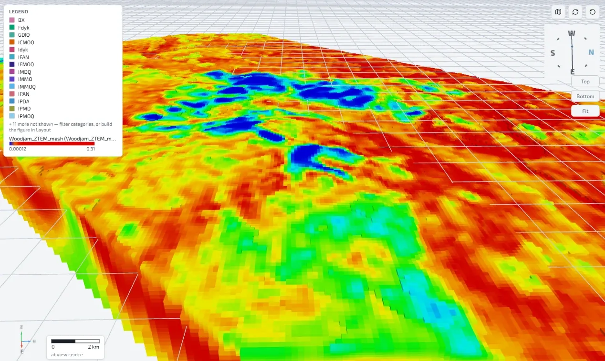
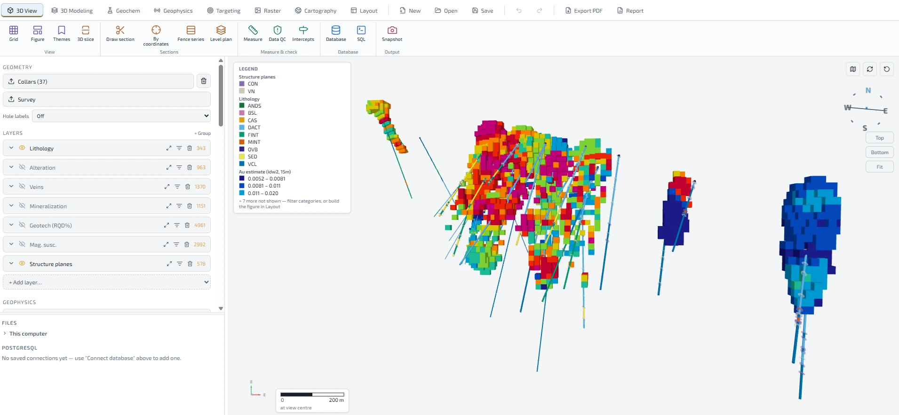
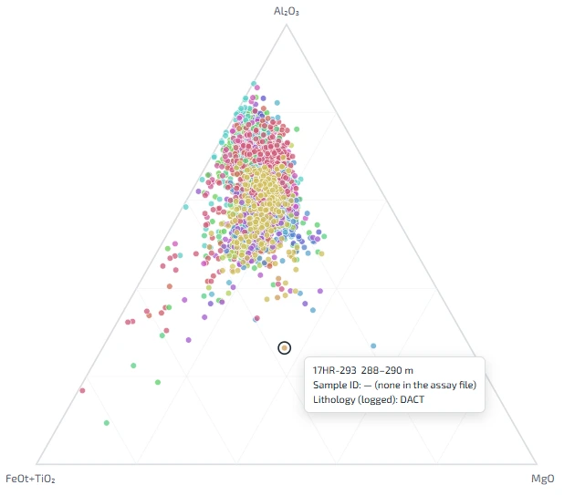

GeoStrix
EXPLORE MODEL DISCOVER
3D software for mineral exploration, free for everyone
Drillholes, geochemistry, geophysics, modelling and drill planning in one place — on an ordinary laptop, offline, with no account and no licence to buy.
Download for Windows View the source
Why GeoStrix
GeoStrix is made to support mineral exploration everywhere, especially where resources are scarce.
Built for exploration
Made for exploration geologists: drillholes, geochemistry and geophysics come together to answer one question — where to drill next.
Easy to use
Drop in your files and GeoStrix recognizes them, checks the data, and explains what it did in plain language.
Light enough for a cheap computer
Runs on an ordinary laptop with no special hardware and no internet connection.
What it does
Bring in CSV and Excel files, shapefiles, GeoPackages, GeoTIFFs, DXF and OMF, connect straight to a PostgreSQL or MySQL database, or open one of two real sample projects from British Columbia.
Drillholes in 3D
Collars, surveys and every kind of log, desurveyed with terrain: sections through any line or hole, fence series, level plans, fence diagrams, strip logs and data checks.
Geochemistry
Assays, pXRF and database imports; classification and alteration diagrams, calculated elements, isocon, statistics, compositing, best intercepts and QA/QC.
Soils and stream sediments
Plan grids and stream sites with your QC inserts (GPX, KML, field sheets); thresholds within populations, survey levelling and domains; catchments from the terrain with dilution correction and drainage ranking; public government surveys for your area.
Geophysics
Point surveys, grids, voxel models and OMF; magnetic (including vector), gravity and 2D DC resistivity / IP inversion.
Satellite imagery and maps
Free Sentinel-2 imagery, iron-oxide, clay and ASTER silica / carbonate / mafic indices, terrain, georeferenced scans, geology maps, web layers and claims, in any coordinate system.
Modelling
Implicit surfaces and stratigraphic stacks (GemPy), models from the geological map alone, surfaces through your own picks, alteration, veins, grade shells, structures and stereonets, block-model estimates and geoML models with uncertainty.
Targeting and drill planning
Evidence overlays and weights of evidence, undrilled parts of a modelled unit, and planned holes checked and exported to CSV, KML and GPS.
Layouts and reports
Print-ready pages with legends, scale bars, collar tables and 3D views, saved as templates and exported to PDF or PNG.
Five languages
English, Spanish, Portuguese, French and Arabic, with a full right-to-left layout for Arabic. GeoStrix starts in your computer's language.
Your data stays yours
No account, no telemetry, no cloud. Projects are files on your computer. Privacy
A look inside
Shown with the bundled sample project: 37 real drillholes from British Columbia's public ARIS database (report 37584).







Click a picture to open it full size.
An exploration tool, not resource-estimation software
GeoStrix's grade tools use nearest-neighbour, inverse-distance or moving-least-squares interpolation, with no kriging, classification, dilution or recovery. Nothing it produces is a Mineral Resource under NI 43-101, JORC or any comparable code; public disclosure of tonnage or grade needs an estimate by a Qualified Person.
Download
GeoStrix is free and open source under the MIT licence. The installer includes everything, including the Python engine used for implicit modelling and inversions. It updates itself when a new version is out.
Download for WindowsWindows 10 / 11 (64-bit) · about 240 MB
GeoStrix is a Windows desktop app: open this page on your computer to install it.
Needs Windows 10 or 11 (64-bit) and about 800 MB of disk space. It runs on an ordinary laptop with integrated graphics and works offline once installed.
No administrator rights? Every release also has a portable zip (about 310 MB) that runs without installing: download GeoStrix-…-win.zip from the latest release, unblock it (right-click → Properties → Unblock), extract it and run GeoStrix.exe. It tells you when a new version is out; you replace the folder with the new zip.
The app is in English, Spanish, Brazilian Portuguese, French and Arabic. It starts in your computer's language, and you can change it at any time in the status bar at the bottom of the window.
Every release, its checksums (SHA256SUMS.txt) and the full source are on GitHub.
Code signing policy · Privacy policy · To uninstall: Windows Settings → Apps → Installed apps → GeoStrix → Uninstall (your project files are kept).
If Windows warns you
GeoStrix is code-signed: Windows names the publisher as Open Source Developer Matheus Mendes de Albuquerque, the legal name of Matt Mendes, who makes GeoStrix. Because the certificate is new, Windows SmartScreen or your antivirus may still hold a brand-new installer the first time:
- On “Windows protected your PC”, click More info, then Run anyway.
- If nothing happens at all, your antivirus may have quarantined it: restore the file from its quarantine, or right-click it → Properties → tick Unblock.
- Updates installed from inside GeoStrix are not affected.
Support
Found a bug, or have an idea? Email support@geostrix.com, or open an issue on GitHub. In GeoStrix, Help → Report a Problem puts your description, a picture of the window and the technical details into a zip file and opens the email for you — you attach the file and send it.
Open source
The code is on GitHub under the MIT licence: use it, study it, change it. Contributions are welcome — start with an issue.
Video tutorials are on the GeoStrix YouTube channel, and news on LinkedIn.
Who makes GeoStrix
Matt Mendes, geologist, founder and developer of GeoStrix.